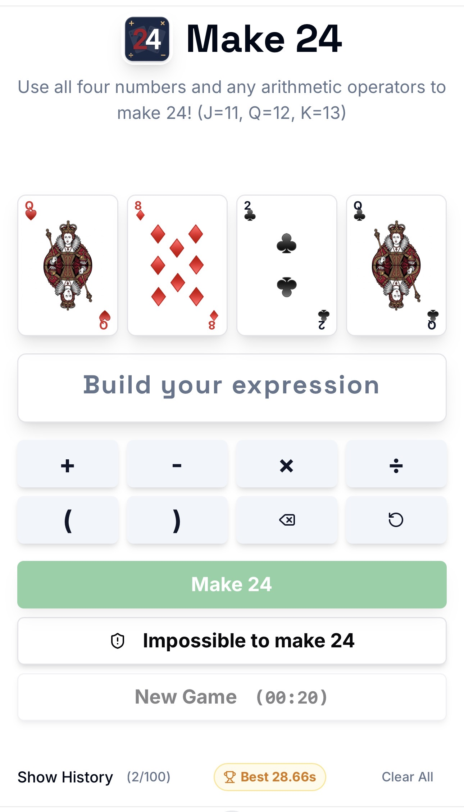

The classic arithmetic puzzle, beautifully reimagined.

The Goal: Use exactly four playing cards and basic arithmetic operators to create an expression that equals 24.
Make 24 is more than just a math game—it is a cognitive workout designed to keep your brain sharp, engaged, and healthy. It combines logic, memory, and motor skills into quick, rewarding sessions.
To succeed, you must think several steps ahead. If you construct an expression poorly and change your mind halfway through, you must clear the board and start over. This consequence trains the brain to visualize the entire solution before acting.
Make 24 demands fast, fluid thinking. The built-in timer pushes you to quickly identify patterns, evaluate mathematical possibilities, and make decisions under gentle pressure, improving your cognitive processing speed.
Solving the puzzle isn't just mental; it requires physical execution. Quickly tapping the correct numbers and operators in sequence improves fine motor skills and reinforces the connection between thought and physical action.
The game tracks your personal best times and history. Rather than punishing failure, this historical data provides positive reinforcement, showing you tangible evidence of your cognitive improvement over time.
Whether you are a student learning basic arithmetic or an adult looking to preserve mental acuity, the fundamental rules of addition and multiplication make this an evergreen brain-training tool for any generation.